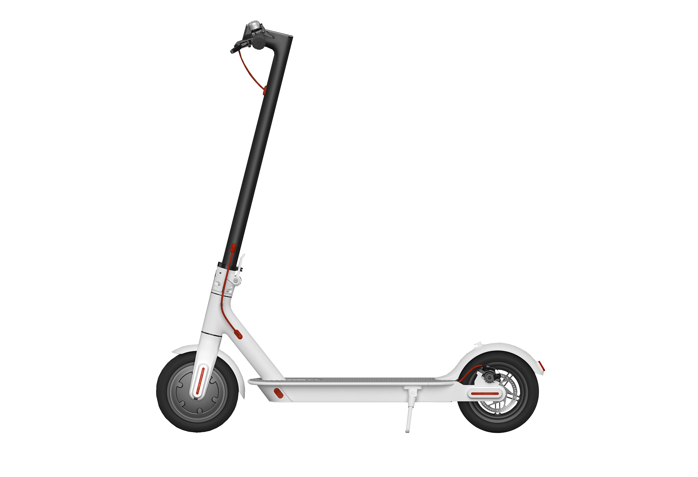
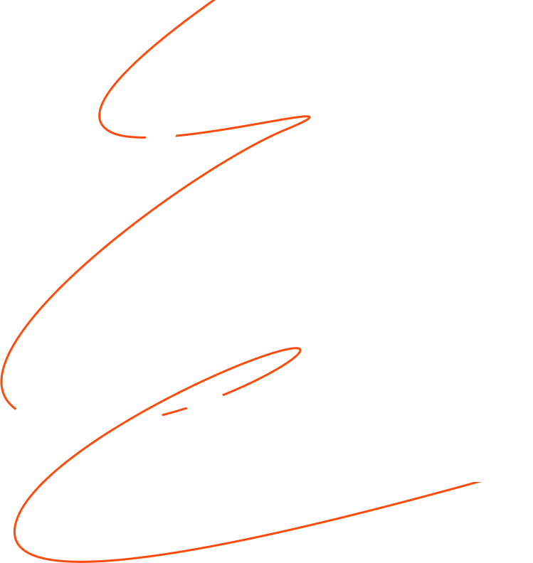
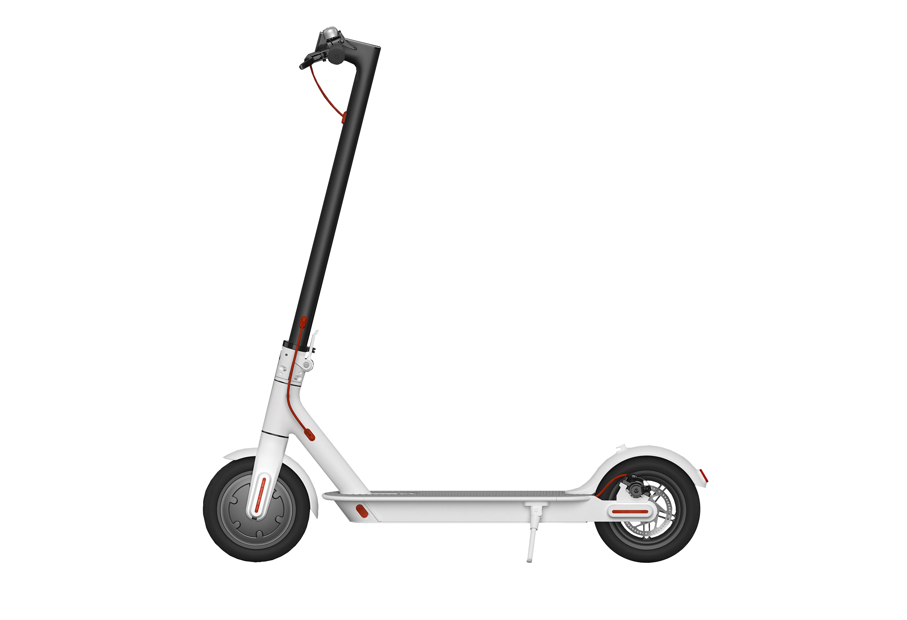
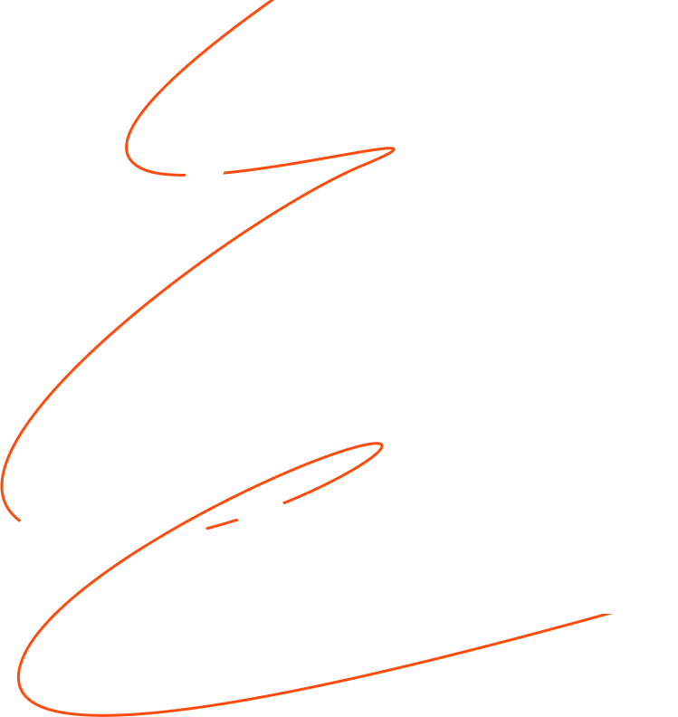
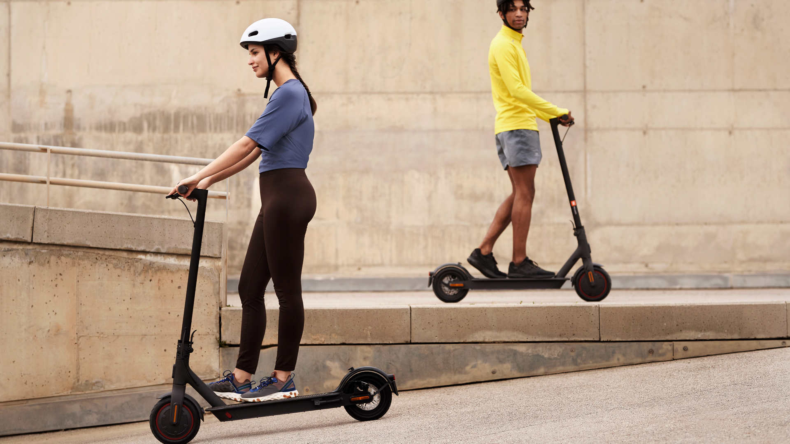
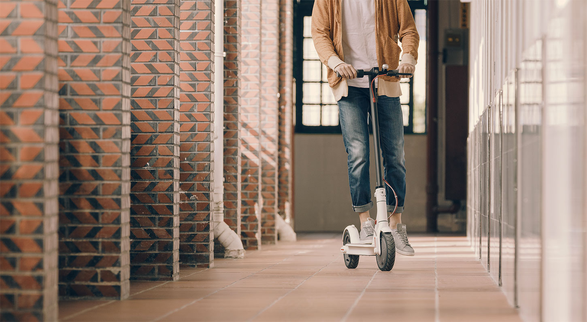

Стильный электросамокат с мощным аккумулятором
Улучшенная производительность для дальних путешествий. Работает так же просто, как и выглядит.
Мощная батарея и экономичный расход заряда позволяют преодолевать расстояния до 45 км
Три режима скорости
Три режима езды позволяют почуствовать себя комфортно в любой ситуации. Режим «S» увеличитвает скорость, если опаздываете на работу. Во время прогулки по парку активируйте режим «D». Включите режим «Пешеход», когда двигаетесь по оживлённой улице.
Система восстановления энергии
Во время торможения и движения по инерции система преобразовывает кинетическую энергию в электрическую, позволяя увеличить общий запас хода самоката.
Мощная батарея
Самокат оснащен аккумулятором емкостью 12 800 мАч. Это позволяет преодолевать расстояния до 45 км без подзарядки.

